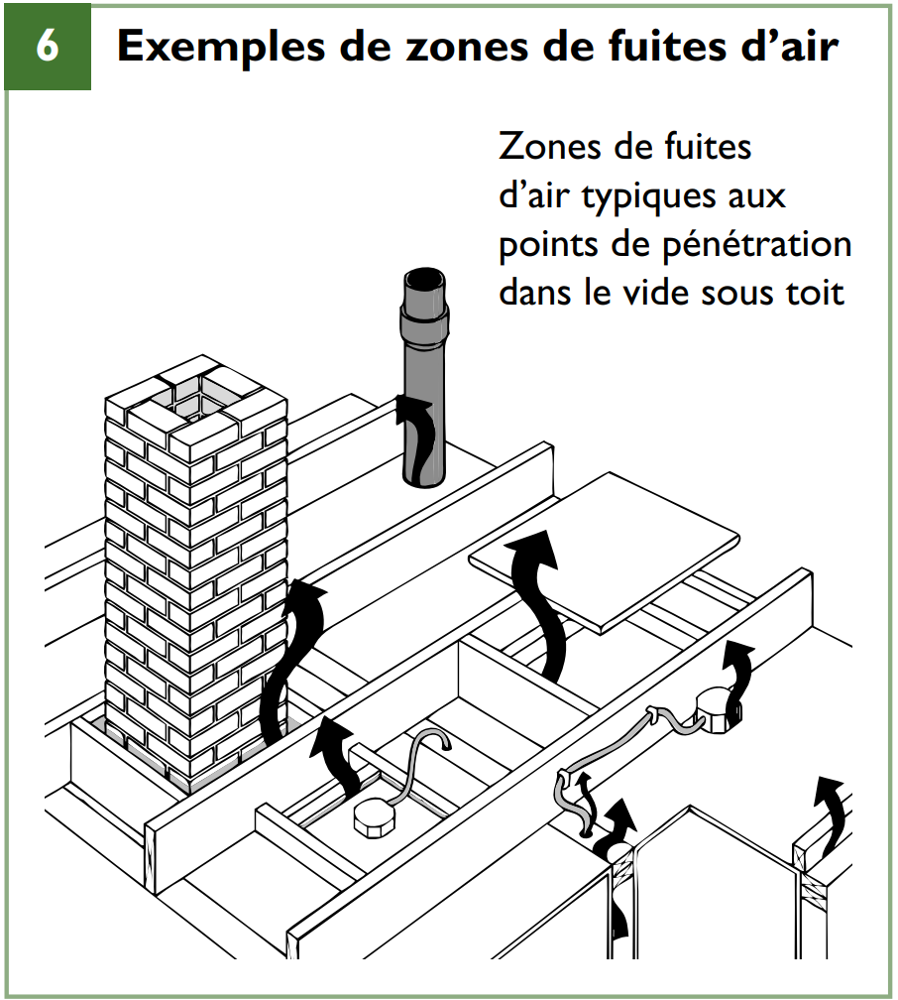
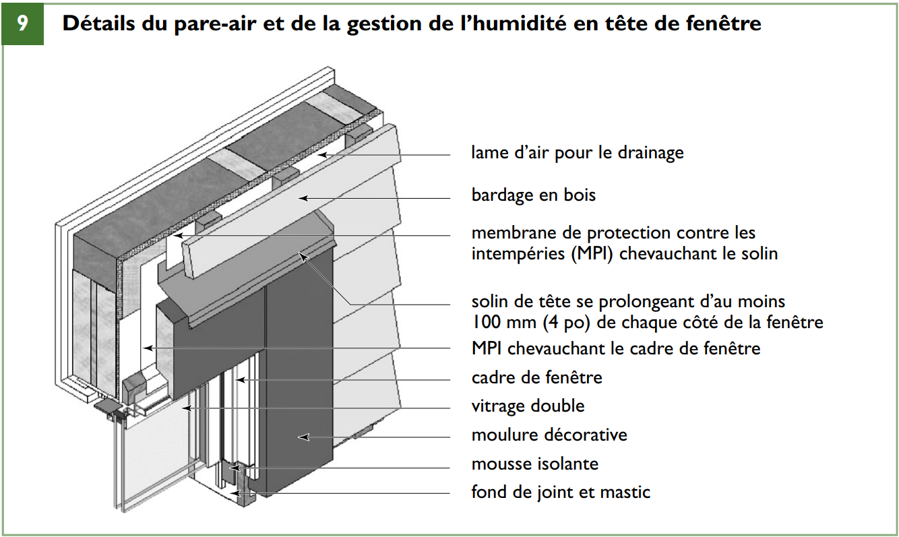
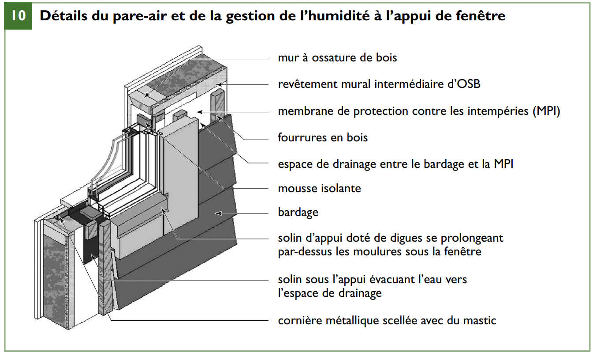
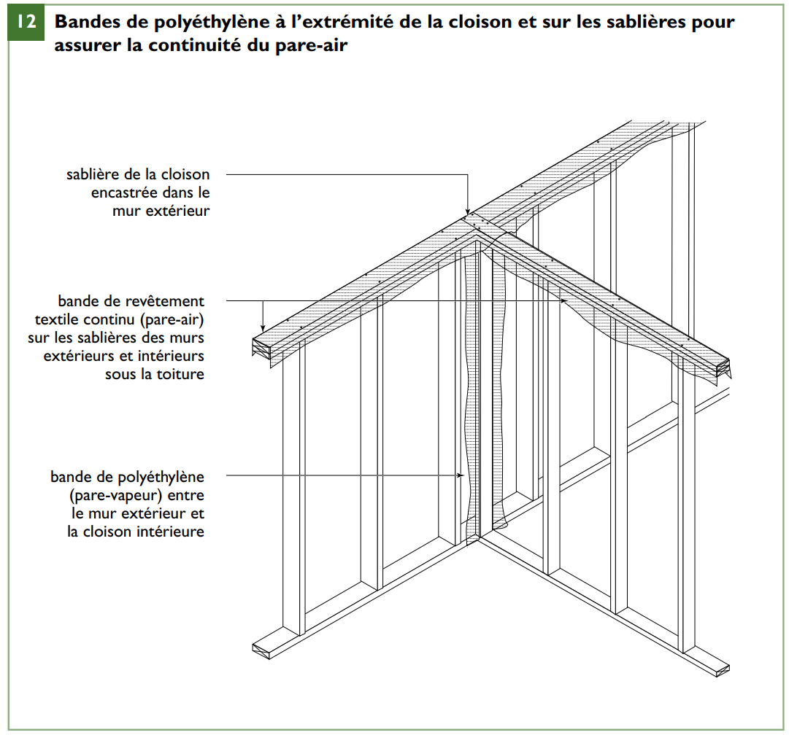

Pare-air
Activer le mode plein écran
Système d’étanchéité à l’air (air barrier system) : ensemble formant une surface continue et destiné à empêcher le passage de l’air.
Voir les exigences du Code de construction du Québec, Division B, Partie 5, Article 5.4.1.1 mentionné au Chapitre « Étanchéité à l’air »
Les fuites d’air à travers l’enveloppe peuvent entraîner la condensation de la vapeur d’eau sur les surfaces froides et cette humidité peut endommager les matériaux dans l’enveloppe si elle s’accumule trop longtemps.
L’étanchéité à l’air est un processus additionnel. La performance du bâtiment à cet égard est directement proportionnelle à la qualité d’exécution de chacun des éléments menant à la réalisation de l’enveloppe.
Les fuites d’air à travers l’enveloppe se produisent en raison des différences de pression de l’air entre l’extérieur et l’intérieur du bâtiment résultant du fonctionnement de ventilateurs ou de l’action du vent.
Pour limiter l’écoulement de l’air, le système d’étanchéité à l’air doit être continu et recouvrir les murs et planchers du sous-sol, les murs extérieurs hors sol et les plafonds sous les toits.
Dans les assemblages de l’enveloppe, on limite les infiltrations et les exfiltrations d’air en mettant en œuvre des matériaux à faible perméabilité à l’air, lesquels sont assez courants en construction résidentielle. Les joints et les points de pénétration doivent toutefois être colmatés pour stopper l’écoulement de l’air, et le pare-air doit être soutenu pour empêcher les déformations ou les déchirements.
Les membranes de polyéthylène sont communément utilisées comme pare-air dans la construction à ossature de bois et elles sont relativement faciles à fixer et à sceller au bois de charpente qui sert de fond. Outre les membranes de polyéthylène, d’autres matériaux peuvent servir à constituer le pare-air : la polyoléfine filée-liée, les plaques de plâtre, les mastics, les joints, la mousse isolante à pulvériser, l’isolant rigide, le béton, le revêtement mural intermédiaire de contreplaqué ou d’OSB, le métal et le verre. Tous les joints, points de raccordement et points de pénétration doivent être scellés au moyen de ruban et de joints d’étanchéité, de mousse, de mastics et de membranes pour que l’enveloppe du bâtiment soit bien étanche.
Système d’étanchéité à l’air
Extrait du Code de construction du Québec, Division B, Partie 5
5.4.1.2. Propriétés des systèmes d’étanchéité à l’air
- Sous réserve du paragraphe 2), les matériaux d’étanchéité à l’air prévus pour assurer la principale résistance aux fuites d’air doivent :
a) avoir un taux de perméabilité à l’air d’au plus 0,02 L/(s · m2), mesuré sous une pression différentielle de 75 Pa; ou
b) être conformes à la norme CAN/ULC-S741, « Normes sur les matériaux d’étanchéité à l’air – Spécification ». (Voir l’annexe A.)
- La limite de perméabilité prescrite au paragraphe 1) peut être accrue s’il peut être démontré qu’une moins grande étanchéité à l’air n’aura pas d’effets indésirables sur l’un ou l’autre des éléments suivants :
a) la santé ou la sécurité des occupants;
b) l’utilisation prévue du bâtiment; ou
c) le fonctionnement des installations techniques. (Voir l’annexe A.)
- Le système d’étanchéité à l’air ne doit être interrompu :
a) ni aux joints de construction, de fissuration et de dilatation;
b) ni aux intersections des différents ensembles;
c) ni à l’endroit des pénétrations dans un ensemble de construction.
- Le calcul des systèmes d’étanchéité à l’air des ensembles de construction soumis à des charges dues aux pressions d’air doit être conforme à l’article 5.1.4.1. et à la sous-section 5.2.2.
A-5.4.1.2. 1) et 2) Fuites d’air à travers un système d’étanchéité à l’air.
Exigences concernant les matériaux
Les exigences actuelles ne prescrivent un taux maximal de perméabilité à l’air que pour le matériau du système d’étanchéité à l’air prévu pour opposer la principale résistance aux fuites d’air.
Le rapport intitulé « Perméance des matériaux de construction à l’air » (1988), produit par AIR-INS Inc. à la demande de la SCHL, reconnaît 19 matériaux parmi un groupe de 36 produits courants qui satisfont à la limite de perméabilité de 0,02 L/(s • m2) mesurée sous une pression de 75 Pa. Une perméabilité supérieure au taux maximal de 0,02 L/(s • m2) sous une pression différentielle de 75 Pa peut être jugée acceptable :
- si les températures extérieures sont douces
- si la teneur en humidité de l’air intérieur est faible
- si l’ensemble est protégé contre la détérioration due à l’humidité
- si des matériaux à plus grande perméance sont installés en direction du côté froid de l’ensemble; ou
- si le système d’étanchéité à l’air isole deux espaces intérieurs dont les milieux diffèrent peu.
Exigences concernant les systèmes
Idéalement, le taux maximal de perméabilité à l’air devrait s’appliquer à l’ensemble du système d’étanchéité à l’air. Le taux maximal jugé acceptable dépendrait, en dernière analyse, des températures et des conditions d’humidité des côtés froid et chaud, et de la vulnérabilité des éléments de séparation à la détérioration due à l’humidité. Les taux maximaux recommandés pour les systèmes d’étanchéité à l’air des enveloppes extérieures des bâtiments dans la plupart des localités au Canada s’établissent suivant les données du tableau tableau A-5.4.1.2. 1) et 2). Ces valeurs visent les systèmes d’étanchéité à l’air dans les parties opaques et isolées de l’enveloppe du bâtiment; elles ne s’appliquent pas à l’ensemble du bâtiment puisque les fenêtres, les portes et les autres ouvertures ne sont pas incluses. Le tableau est fourni à titre indicatif aux fins de mise à l’essai des systèmes d’étanchéité à l’air en tant que parties de l’enveloppe.
/Attachments/t-A-5.4.1.2__1_et_2.png)
Toutefois, il n’est pas aisé de déterminer la perméabilité à l’air d’un ensemble de construction donné. Les renseignements sur l’étanchéité à l’air des nombreux systèmes d’étanchéité à l’air utilisés en construction sont rares et les essais exigent du matériel spécialisé et des connaissances approfondies. Selon le type d’essai employé :
- les résultats obtenus ne sont pas nécessairement représentatifs de l’efficacité du système dans son ensemble;
- les fuites peuvent être difficiles à localiser; ou
- l’élimination des fuites n’est pas toujours possible.
Malgré les difficultés que cela représente, il est recommandé de faire des essais si l’on ne connaît pas l’efficacité du système mis en œuvre. Il existe au moins 3 types d’essais :
- les essais en laboratoire sur de petites parties du système d’étanchéité à l’air, y compris les joints et les intersections des différents ensembles de construction
- les essais en laboratoire sur de grandes sections de mur; et
- les essais sur place sur des parties types de l’enveloppe.
Emplacement du pare-air
Extraits de la SCHL
Parce que l’écoulement de l’air à travers les orifices et les fissures dans l’enveloppe joue un rôle beaucoup plus grand dans le transport de la vapeur d’eau que la diffusion de la vapeur d’eau à travers les matériaux (environ 30 fois plus), le pare-air est plus important que le pare-vapeur pour prévenir le transport de l’humidité à travers l’enveloppe.
Le système d’étanchéité à l’air peut se situer n’importe où dans l’enveloppe.
Toutefois, dans les maisons à ossature de bois, on a souvent recours à un pare-air/ pare-vapeur combiné constitué d’une membrane de polyéthylène de 0,15 mm (0,006 po). Celle-ci est placée sous les plaques de plâtre des murs et des plafonds, dont on aura colmaté les joints, les points de pénétration et les interruptions, tels que les jonctions avec les fenêtres et les planchers.
Dans ce cas, le pare-air/pare-vapeur combiné doit être situé du côté chaud de l’isolant afin de réduire le plus possible le risque de condensation dans les cavités de mur ou de plafond à cause de la diffusion de vapeur d’eau.
Il pourrait être indiqué de séparer le pare-air du pare-vapeur.
Par exemple, il peut être avantageux de situer le pare-air sur la face externe lorsqu’un isolant est appliqué sur le côté extérieur de l’ossature murale.
Par contre, lorsqu’une membrane pare-air est placée sur la face externe de l’isolant (un revêtement textile continu par exemple), elle doit être perméable à la vapeur d’eau de manière à permettre à l’assemblage de s’assécher vers l’extérieur.
Le polyéthylène est couramment utilisé comme pare-air dans les toits et les vides sous toit. On l’agrafe habituellement à l’ossature du toit sur le côté chaud de l’isolant dans le vide sous toit et au pare-air du mur. Pour que le polyéthylène agisse comme pare-air, il doit être appuyé contre l’ossature.
En construction résidentielle, on appuie généralement la feuille de polyéthylène sur les plaques de plâtre d’un côté et sur l’ossature et l’isolant de l’autre.
Les murs de fondation en béton peuvent faire partie du pare-air et doivent être scellés au plancher en béton et au pare-air des étages. En présence de radon ou de gaz souterrains, on peut empêcher leur pénétration en scellant le plancher de béton aux murs et en colmatant les avaloirs de sol, les fissures et les points de pénétration.
Détails du pare-air
Extraits de la SCHL
De nombreux endroits dans l’enveloppe, comme les solives de bordure, le sommet et les extrémités des cloisons, les ouvertures, les services, les colonnes de ventilation, les cheminées, les détails d’ossature spéciaux et les points de pénétration d’installations électriques, de plomberie et de mécanique, sont sujets aux fuites d’air (voir l’illustration suivante)

Ils doivent donc être colmatés avec soin et de manière durable (c’est-à-dire pour toute la durée utile du bâtiment).
L’aspect longévité est crucial, car le pare-air est rarement accessible pour l’entretien et les réparations une fois l’enveloppe achevée.
Il faut se rappeler que les pare-air des différentes zones d’une maison doivent être raccordés et scellés les uns aux autres de manière à procurer un système d’étanchéité à l’air continu.
Plancher du sous-sol
Une dalle de béton ou une membrane de polyéthylène peut servir de pare-air.
Le pare-air du plancher doit toutefois être scellé au pare-air des murs sous le niveau du sol : il suffit de poser un cordon de mastic sur le joint entre le plancher et les murs du sous-sol.
Murs sous le niveau du sol
Extraits de la SCHL
Un mur en béton ou une membrane de polyéthylène peut servir de pare-air.
Le pare-air des murs sous le niveau du sol doit être scellé à la fois à celui du plancher du sous-sol et des murs hors sol ; il doit être mastiqué ou scellé au pare-air de l’ossature de plancher (par exemple en entourant la solive de rive de polyoléfine filée-liée afin d’être continu.
Si les murs du sous-sol sont isolés par l’intérieur, il importe d’empêcher l’air intérieur d’entrer en contact avec la paroi intérieure des murs de fondation en béton, car ils seront froids, ce qui augmentera considérablement le risque de condensation. Pour ce faire, il convient de poser un isolant rigide directement sur le béton et de sceller les joints des panneaux d’isolant.
Murs hors sol
Extraits de la SCHL
Lorsque le pare-air est fixé du côté intérieur de l’ossature murale, il est facile de le sceller au polyéthylène fixé à la sous-face de l’ossature du toit. Il est cependant difficile de poser un pare-air de polyéthylène au point de jonction entre les solives de plancher et le mur extérieur étant donné que les solives coupent la continuité du pare-air.
On préconise de fixer une membrane perméable à la vapeur d’eau (imperméable à l’air) en polyoléfine filée-liée (revêtement textile continu) à partir de l’intérieur du mur du bas, de remonter sur le côté extérieur de la solive de bordure et de ramener la membrane jusqu’au côté intérieur du mur du haut (voir l’illustration suivante).
/Attachments/7-pare-air_enveloppant.png)
Ce revêtement continu est ensuite scellé aux pare-air de polyéthylène sur la paroi intérieure des murs du bas et du haut. Parce qu’il est perméable à la vapeur d’eau, ce revêtement textile continu ne nuira pas à la diffusion de la vapeur d’eau dans la zone de la solive de bordure.
Il en va de même pour la jonction entre les murs de fondation et les lisses d’assise, entre les lisses d’assise et les solives de rive et entre les solives de bordure et le support de revêtement de sol. Ces points de contact doivent être rendus étanches à l’air par la pose de mastic et de garnitures d’étanchéité ou par le recouvrement de l’extérieur de la solive de rive par une membrane en feuille qui rendra cette zone étanche à l’air.
Si le plan d’étanchéité à l’air est situé du côté intérieur de l’enveloppe, le câblage électrique, les sorties, les interrupteurs et les luminaires encastrés qui traversent le plan d’étanchéité doivent être étanches à l’air.
On recommande l’utilisation de boîtiers électriques étanches à l’air pour les appareils, les sorties et les interrupteurs situés dans l’enveloppe.
Si le polyéthylène sert d’élément de pare-air intérieur, il doit chevaucher les boîtiers et y être scellé. On peut aussi enrober les boîtiers électriques de polyéthylène de 0,15 mm (0,006 po) d’épaisseur, puis chevaucher la doublure de polyéthylène au polyéthylène du mur et rendre le joint étanche à l’aide d’un ruban ou de mastic.
Le chevauchement doit être d’au moins 100 mm (4 po) et être situé sur un élément d’ossature. Tout le câblage doit être mastiqué à l’endroit où il pénètre dans le boîtier afin de prévenir les fuites d’air.
Dans la mesure du possible, on évitera de poser des sorties électriques dans les murs extérieurs.
Il faut prévoir un pare-vapeur sur l’isolant posé entre les extrémités des solives de plancher dans l’espace adjacent aux solives de bordure, mais il n’est pas nécessaire de le sceller avec soin aux solives et au support de revêtement de sol, à moins qu’il ne fasse partie intégrante du pare-air. Il s’avère plus difficile de réaliser un pare-air efficace à cet endroit parce que les matériaux doivent être coupés et ajustés entre les solives (voir l’illustration suivante).
/Attachments/8-mise-en-place.png)
La mousse isolante à cellules fermées pulvérisée est souvent utilisée pour isoler cette zone, car elle remplit entièrement l’espace et agit à la fois comme isolant et pare-air.
Lorsque le polyéthylène sert également de pare-air, le périmètre des pièces de polyéthylène recouvrant l’isolant découpé doit être mastiqué à l’ossature de manière à sceller les joints et à prévenir les exfiltrations.
L’isolant rigide convient à cet endroit, et certains isolants semi-rigides ou souples avec support de papier d’aluminium renforcé font aussi l’affaire.
Il faut étanchéiser l’interface entre les fenêtres, portes et lanterneaux et les murs et plafonds en scellant toutes les jonctions entre le pare-air de polyéthylène et les cadres des fenêtres, portes et lanterneaux (voir les deux illustrations suivantes).


Les surplombs et les planchers en porte-à-faux situés au-dessus d’espaces non chauffés ou extérieurs ainsi que les points de pénétration des conduits, des cheminées et des tuyaux doivent aussi être rendus étanches à l’air.
Les fenêtres peuvent être posées sur le même plan que la paroi extérieure ou que la paroi intérieure, ou encore au milieu du bâti d’attente des murs, comme sur l’illustration suivante, notamment dans le cas des assemblages muraux hautement isolés, qui peuvent être plus épais que les murs traditionnels en raison de l’ajout d’isolant.
/Attachments/11-fenetre-dans-un-mur.png)
Une fenêtre alignée sur la paroi intérieure du mur réduira les risques de condensation sur le vitrage, car la fenêtre sera située dans un endroit plus chaud, mais il faudra fort probablement installer des moulures et des solins de pièces d’appui plus profonds sur l’extérieur des fenêtres.
Cet emplacement réduit l’exposition de la fenêtre à la pluie poussée par le vent, mais la déviation de l’eau repose davantage sur les solins.
L’installation de la fenêtre au milieu du mur, comme le montre l’illustration, nécessite moins de solins et de moulures à l’extérieur et offre de l’espace pour un appui de fenêtre intérieur.
Les portes de garage qui séparent les garages chauffés d’espaces non chauffés ou extérieurs doivent être pourvues d’une garniture d’étanchéité.
Les foyers à feu ouvert doivent être munis de portes ou d’une enceinte qui limite la circulation d’air dans la cheminée lorsque le foyer n’est pas utilisé. Bien que ces améliorations ne constituent pas des pare-air, elles devraient aider à réduire les fuites d’air.
Toits
Extraits de la SCHL
Il est de pratique courante de poser le pare-air du plafond avant de construire les cloisons intérieures parce qu’il est plus facile de réaliser un raccordement étanche à l’air entre les sablières des murs et les espaces non climatisés (comme les vides sous toit).
Si, toutefois, les cloisons intérieures sont construites avant la mise en place du pare-air du plafond, le sommet des cloisons doit être recouvert de bandes de polyéthylène ou de polyoléfine de 450 mm (18 po) de largeur (voir la figure 12), lesquelles chevaucheront subséquemment les pare-air des murs extérieurs et du plafond et y seront scellées.

Les bandes peuvent être posées entre les deux sablières afin d’éviter de les endommager durant les travaux (voir l’illustration suivante).
/Attachments/13-bande-de-polyéthylène.png)
Le pare-air chevauche la bande de polyéthylène au sommet du mur et est fixé à l’aide de ruban.
De cette manière, la continuité du pare-air est assurée entre le polyéthylène fixé à la sous-face de l’ossature du toit et celui des murs.
Pour réduire les fuites d’air au pourtour de la trappe d’accès au vide sous toit, on recommande de poser une garniture compressible sur le périmètre de l’ouverture, entre la partie amovible et le cadre, ainsi que des loquets pour garder la trappe fermée